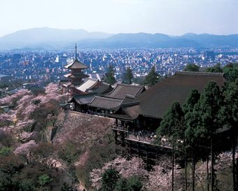

The most visited temple in Kyoto. Founded in 798, soon after the capital was moved to this area. The main hall shown in the photo was reconstructed in 1633. The large open veranda-like space, called Kiyomizu no Butai, offers a good view of the city. The building rests on pillars made from zelkova wood, with some of them rising more than 10 meters from the base of the nearby cliff. The open space was built as a stage for performances, and the saying, Kiyomizu no butai kara tobi-oriru ("jumping off the Kiyomizu stage") means making an important life-changing decision.
Return